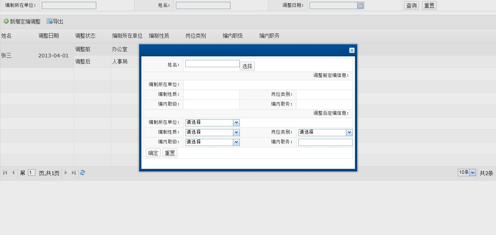

解决ie6的iframe内存泄露的处理建议：
当前问题：在IE6的低版本中iframe的大量使用会导致IE出现iframe内容不释放的内存泄露，在企业级不能不顾及IE低版本的今天，如何减少大量Iframe的使用成为了提升性能，增强用户体验的一个有效途径
解决方案：各个功能页面弹窗的大量使用导致连带Iframe大量使用是我们目前的重点优化目标，将子页面的内容读取到父页面中来使用而不再用iframe内嵌一个子页面成为了一个可行的解决方案
项目场景：在高新区OA项目组中有这个一个场景,点击DataGrid工具栏上的新增定编调整，需要打开一个弹窗，该弹窗内容是另外一个HTML地址

下面我们来看下这个弹窗的代码,src属性指定了内嵌页面的地址，mode属性指定了该弹窗并非是用传统的iframe内嵌，而是是用Ajax模式将目标页面的内容读取到当前页面展现，如此一来弹窗的处理上我们就可以摒弃对iframe的依赖
fastDev.create("Dialog",{
src : "newredeploy_db.html",
mode : "ajax",
width : "600px",
height:"350px",
allowResize : false,
showCollapseBtn : false
});
注意事项：
1.使用这种模式时开发人员必须意识到子页面并不存在了，所有子页面的逻辑，样式，代码全部被移动到主页面进行使用，这样的话，如果继续在子页面中引用业务JS以及自定义样式会导致功能的不可用，必须将子页面的引用资源（js和css）放到主页面进行引用
2.因为没有使用iframe所以所谓的子页面并不是一个单独的空间了，那么子页面的业务逻辑函数或者是一些样式声明就有可以与主页面的重名，导致出现不可预期的错误，因此建议对子页面的函数名或样式名前加上子页面的业务模块名称来避免出现重名问题
3.同样因为没有使用iframe所以也就不存在主页面的访问时父子关系，而是平级关系，对主页面的操作不能再使用window.parent等前缀，直接将主页面当做当前页面操作即可